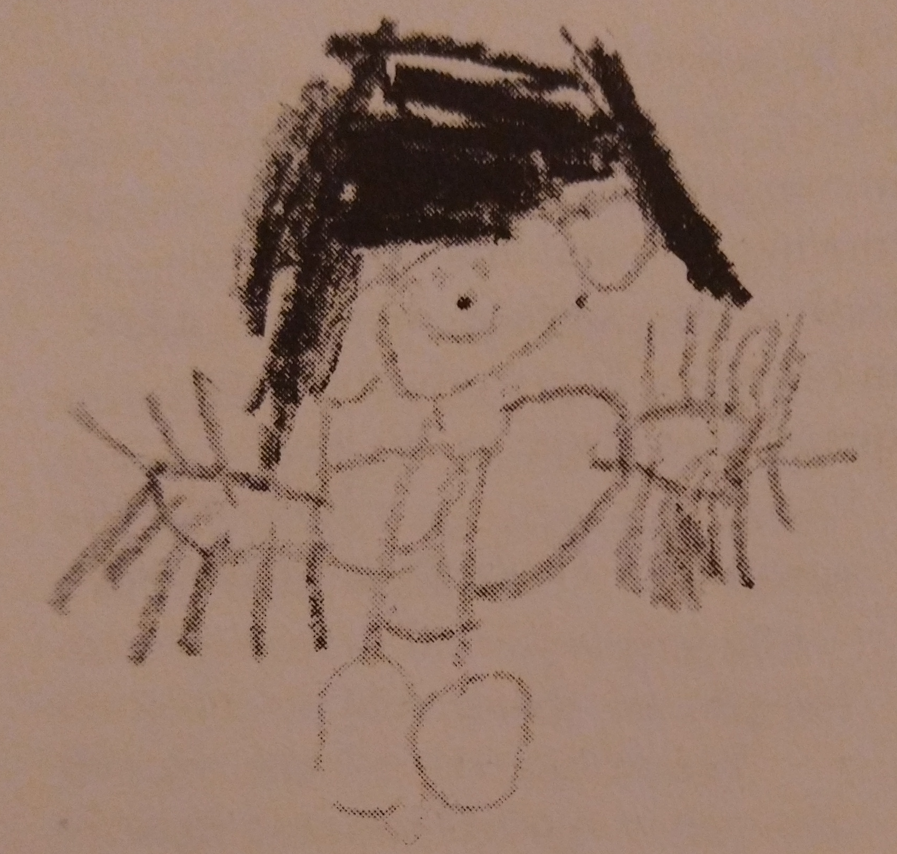
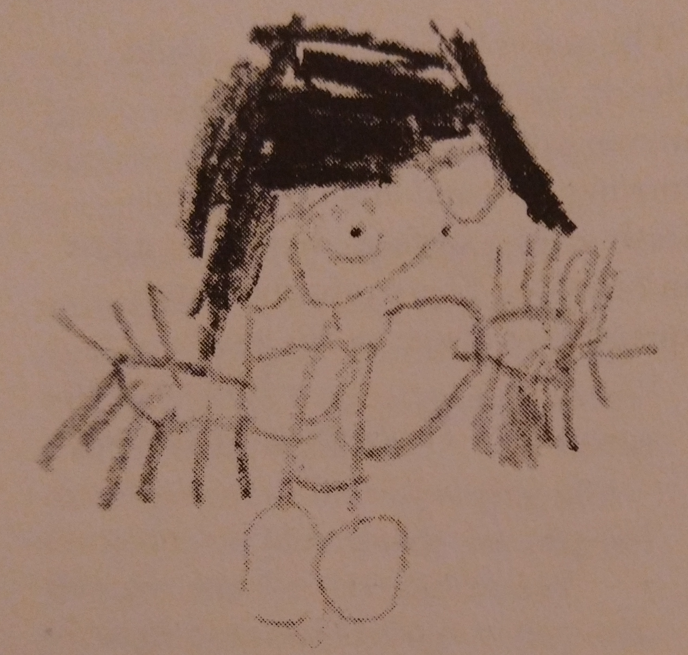

CP540: Project planning, management and methods
Note taking: Review
L Lue
Department of Chemical and Process Engineering
University of Strathclyde
Overview
- Review of note taking
- Critical review of information
- reading strategies
- reading critically
- Questions to ask
- focusing your report topic
Publication process
- Authors submit a manuscript to a journal
- The editor decides whether the manuscript is appropriate for the journal.
- The manuscript is sent to be reviewed by experts in the field.
- Referees send back their written critique of the manuscript to the referee.
- Editor decides what action to take on the manuscript and informs the authors.
- Authors respond to the editor, addressing the referee comments and making changes to the manuscript if needed.
- Editor makes final decision.
Recent controversies in science
- polywater, 1966
- water memory, 1988
- Cold fusion, 1989
- Faster-than-light neutrino anomaly, 2011
Commercial scientific publishing
Commercial publishers
- Elsevier
- Wiley
- Taylor & Francis
- Springer
- SAGE
Why do researchers publish?
- genuine interest in their subject
Issues in publishing
- Conflicts of interest
- predatory publishers
- authorships for sale
- Referee clubs
Retraction Watch
Open access publishing
- https://arxiv.org
- Gold open access
- Green open access
- eLife
The future of scientific publishing?
- YouTube
- ResearchGate
- https://scienceopen.com
Review of note taking

Strategies for reading
- reading plan
- reading purpose
- skimming a difficult text
- reading for new vocabulary
- reading for facts
- reading for ideas
- targeted re-reading
- chat with others
Reading plan
Strategies for active understand reading
- Activating and using background knowledge
- Generating and asking questions
- Making inferences and predicting
- Summarizing and visualizing
- Monitoring and understanding
Critical reading of literature
- What does it mean to be critical?
- connect with other work
- understand different perspectives and framing of an issue
- identify underlying assumptions
- Be an active reader
Godel's incompleteness theorem

Understanding through models and stories
- models
- symbols
- assumptions
Drawing

Symbols


Portraits
 


Landscapes

Complicated symbols

Questions to start your critical reading
- content
- structure
- style
- author
Questions to deepen your reading
- purpose
- evidence presented (as opposed to the conclusions)
- assumptions (perspective)
- concepts used by the author
- interpretations (what are the adjectives used in the text)
- positioning of the paper and author
- impact of the argument
Questions to ask
- Authority
- Purpose
- Publication & format
- Relevance
- Date of publication (or creation)
- Documentation
Authority
- background of the author(s)?
- funding sources
- expertise
- In what communities does the author have expertise
- what else has the author written?
- what institutions/groups is the author associated with (e.g., university, think tank, etc.)
Purpose
Publication & format
Date of publication
Documentation
Perspective
Critical analysis of content
- Intended audience
- Objective reasoning
- Coverage
- Writing style
Annotated bibliography
Types of "facts"
- objective
- subjective
- collective subjective
Example
Choosing a topic
"…the more you narrow the field, the better and more safely you will work."
Umberto Eco, How to Write a Thesis
Summary
- Narrow your topic!